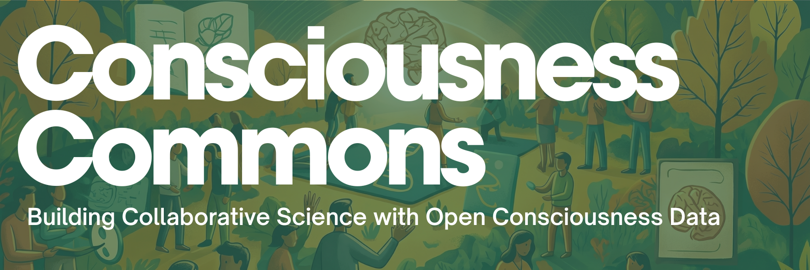
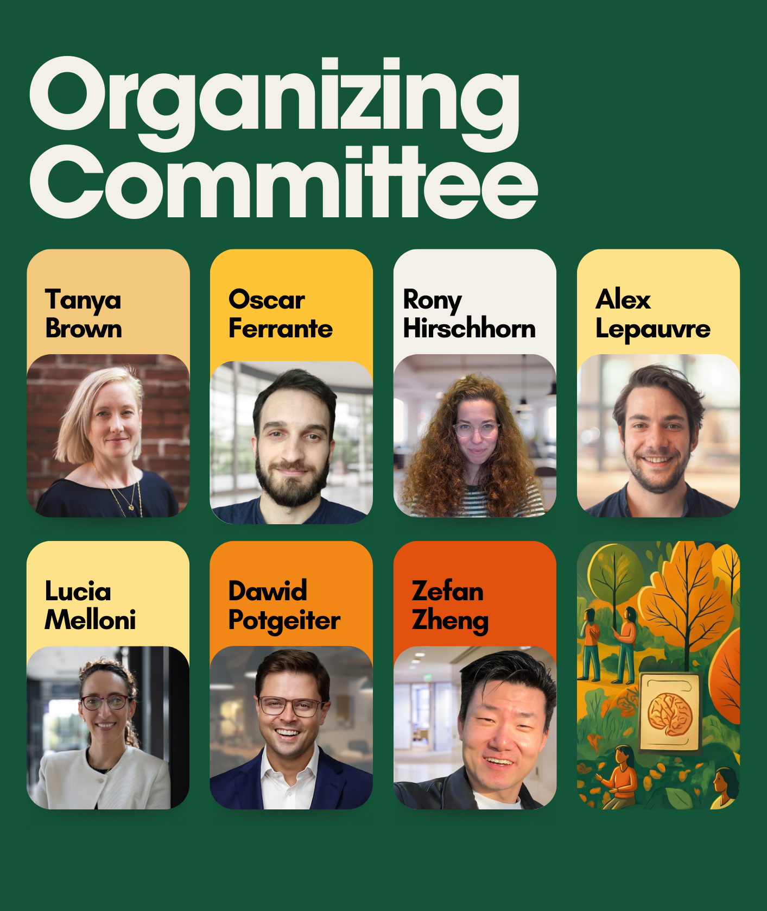

Consciousness Commons is a two-day collaborative satellite workshop following ASSC 2026 that brings together early-career researchers to develop new scientific projects using open datasets in consciousness science.
Participants work in interdisciplinary teams to formulate hypothesis-driven research questions and develop rigorous analysis plans using openly shared datasets — including the Cogitate Consortium datasets. The workshop combines hands-on exposure to open scientific workflows with structured collaborative project development and guidance on preregistration and reproducible research practices.
By the end of the workshop, each team will have produced a preregistered research plan specifying their hypotheses, dataset, and analysis pipeline — and teams will be eligible to compete for $25,000 in seed funding to support their project after the event.
Develop a clear scientific research question addressable with existing open consciousness datasets.
Target neural correlates of consciousness or predictions from competing theoretical frameworks.
Explore and choose appropriate open datasets, including those from the Cogitate Consortium.
Specify neural measures and analysis methods required to test your hypothesis rigorously.
Follow best practices in open and FAIR scientific workflows for transparent, reproducible analysis.
Draft and submit a preregistered research plan on the Open Science Framework before any analyses.
Over the past decade, the scientific study of consciousness has generated large-scale, openly shared datasets through initiatives like the Cogitate Consortium. These datasets create unprecedented opportunities to test new hypotheses, reanalyse existing results, and evaluate competing theoretical predictions.
Consciousness Commons creates a temporary scientific commons where early-career researchers can work productively with shared datasets, develop collaborative research ideas, and build the practical skills necessary to conduct transparent and reproducible science.
An international team of consciousness researchers and open-science advocates.

Official satellite event of the Association for the Scientific Study of Consciousness conference.
Data and analysis platform providing free computational resources and Cogitate datasets in BIDS format.
Templeton World Charity Foundation — source of sub-grant funding for the prizes.
Granting partner supporting open data infrastructure and persistent identifiers.
Applications are open to early-career researchers with a passion for open science and consciousness research.
View How to Apply See Timeline